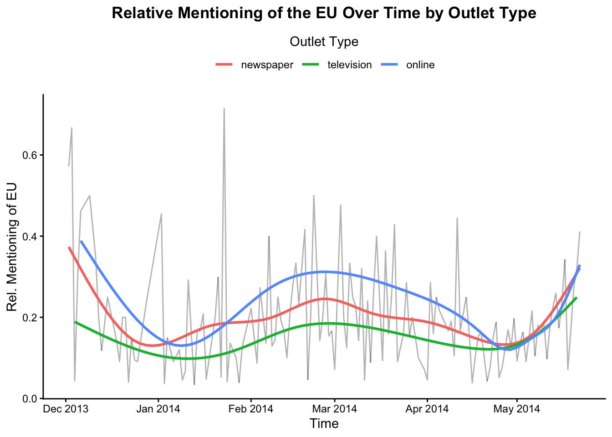

| Cycle | Start | End |
|---|---|---|
| First News Cycle | 02.12.2013 | 26.12.2013 |
| Second News Cycle | 27.12.2013 | 30.03.2014 |
| Third News Cycle | 31.03.2014 | 28.04.2014 |
| Fourth News Cycle | 29.04.2014 | 21.05.2014 |
EU Content Exposure
Prerequisites
The following packages were used: tidyverse, ggplot2, knitr, patchwork, and visreg.
Research Question
How does exposure to Dutch news coverage of the EU relate to EU election turnout intentions over time (and eventual turnout)?
To skip all intermediate sections, head straight to the Research Question Visualization.
Supplementary note: At the beginning of this report, I would like to inform the reader about the decision of including the variable of actual election turnout in my research question. Turnout intentions were measured at three different points in time. Importantly, turnout intentions were only measured before the election and the fourth measurement wave occurred after the 2014 EU election. Thus, the fourth wave measured actual turnout. As a substitute measure for turnout intentions, I chose to correlate exposure to EU news within the fourth exposure period with actual EU turnout.
▪️ Coverage of the EU Across News Cycles
Assigning News Content to News Cycles
As I was interested in examining the relationship between EU news exposure and turnout intentions over time (and eventual actual turnout), I had to identify which news coverage exposure to examine in relationship with each of the three measurement times of turnout intention and with the single measure of actual turnout.
I wanted to examine how specific content at a specific point in time uniquely related to each wave measurement of turnout intentions. This would allow me to speculate that potentially different relationships between exposure to EU news and turnout intentions over time would perhaps be due to the exposure to news content unique to a certain news cycle. Therefore, the turnout intentions in one wave were later correlated with the consumption of unique, idiosyncratic news coverage of the EU leading up to these turnout intentions. I categorized the analyzed content into different news cycles, thereby capturing only the news individuals were exposed to in the news cycle that preceded a specific survey wave, excluding the news preceding a prior wave. Consequently, I had to create four news cycles, each containing news coverage that uniquely precedes each wave measuring turnout intentions.
I decided that a news cycle should end on the last day of data collection of a wave with whose scores an individuals content exposure would be created. While individuals early on in the data collection wave were not exposed to this content, using this end day of a news cycle allowed me to be certain that individuals later on in a data collection wave were not exposed to content that I did not account for. Additionally, since actual turnout occurs on the day of the election and not at the point in time when the fourth measurement wave occurred, the fourth news cycle ends the day before election day (May 21st, 2014).
Furthermore, each news cycle starts one day after the last day of data collection of a prior wave, except for the first news cycle. The first day where news content was analyzed is used as the start of the first news cycle.
The start and end dates of each news cycle are as follows:
Here is a visualization of the duration of each news cycle:
Figure 1.
Having figured out the duration of each news cycle, the content must be assigned an news cycle. I did so by creating a news cycle variable called cycle.
As can be seen, most news content was collected and analyzed during news cycle 2. This is unsurprising given that news cycle 2 was by far the longest.
Figure 2.
As can be seen, across the news cycles, the number of news items collected from one type of outlet relative to the number of news items analyzed from another outlet remained consistent. Within each news cycle, most items were collected from newspapers, followed by television items, followed by items online:
Figure 3.
I also wanted to assess in which time period most articles were gathered without categorizing items by news cycle. Most articles were gathered just before the 2014 EU elections:
Figure 4.
To examine whether a news item covered the EU, I altered the variable eu_evaluation by turning it into an EU coverage variable. The eu_evaluation variable is a variable that also contains information on whether a news item mentioned the EU:
| eu_evaluation |
|---|
| NA |
| Mentioned but not evaluated |
| Negative |
| Rather negative |
| Balanced/mixed |
| Not applicable / not mentioned |
| Rather positive |
| Positive |
As can be seen above, the variable contains eight different values - seven of which implying that a news item mentioned the EU based on the fact that information is provided as to how the EU was evaluated. It is assumed that missing values in turn indicate that an article did not mention the EU.
Thus, a variable can be created that assigns a value of 1 to those articles mentioning the EU and a 0 to those articles not mentioning the EU (i.e. the ones with missing values on eu_evaluation). This variable was termed eu_mention.
Now we can assess how often the EU was mentioned relative to other news content in a news cycle. As the following graph shows, the EU was mentioned the most in news cycle 4, the cycle preceding the EU elections:
Figure 5.
I further visualized how often the EU was mentioned in news articles across the entire time in which news items were gathered. I did this by examining the number of news items mentioning the EU relative to other news coverage on a given day. As can be seen, the coverage of the EU first decreased between early December and January, then increased until late February, decreased again until late April, and started increasing again leading up to the EU elections on May 22nd. Note that the news cycles are visualized with different colors in the background.
Figure 6.
As shown below, the change in relative mentioning of the EU over time was very similar across the analyzed outlet types (newspapers, television channels, and online news-sites). For most of the time during which news items were collected, the online online news-site mentioned the EU more than the other two outlet types (albeit in relative terms).
Figure 7.

▪️ Creating Exposure Variables
In order to eventually correlate exposure to news coverage of the EU with election turnout intentions and actual turnout, I had to create a variable that captures the exposure of an individual to EU coverage within a certain time.
This was done following a method proposed by De Vreese et al. (2017).
First, I multiplied the relative number of news items mentioning the EU (within a given news outlet) in the news cycle leading up to a measurement wave of political intention and the eventual election turnout with an individuals reported frequency of consuming that particular news outlet (as reported in the measurement wave following the news cycle). This reflected an exposure score to news coverage of the EU, weighted by how much the individual consumed the news outlet in the news cycle leading up to each survey wave.
I then calculated the total sum of these weighted exposure scores per wave, resulting in a single value of exposure to EU news for an individual per wave. Values were stored in the variable eu_exposure.
▪️ Outlier Detection
In visualizing the distribution of values of our continuous variables of interest (eu_exposure & turnout_int_eu), using box plots, it appears there are outlier values for the variable of eu_exposure in each wave. No outliers seem to be present in turnout_int_eu.
Figure 8.
Following outlier detection, I handled outliers on the variable of eu_exposure by replacing values greater than 1.5*IQR above the third quartile as well as values smaller than 1.5*IQR below the first quartile with the mean of eu_exposure (Note the caveats of winsorization using the mean).
Here is the distribution of values of eu_exposure per wave after the handling of outliers:
Figure 9.
Research Question Visualization
What now follows is the visualization of the research question.
Note the second row of plots for the research question. The linear regression lines of the plots visualizing the association between turnout intentions and exposure to EU news represent associations that control for turnout intentions of a prior wave (only applicable to the second and third survey wave). The color of the regression lines corresponds to the news cycle to which individuals were exposed. The first row is an altered version of Figure 6., reminding the viewer about the frequency of news about the EU relative to other news, as well as when the three survey waves and the EU election occurred.
Figure 10.
▪️ Result Interpretation and Answering the Research Question
The graphs of the second row visualize the following results:
In wave 1 (around Dec. 26th), there is a significant negative relationship between exposure to EU news (published in news cycle 1) and intention to turnout in the EU election. This was ascertained using a linear regression model. Linear regression results are not presented in this report.
In wave 2 (around Mar. 30th), there is a non-significant relationship between exposure to EU news (published in news cycle 2) and intention to turnout in the EU election. This was ascertained using a linear regression model, controlling for turnout intentions in the prior wave. Linear regression results are not presented in this report.
In wave 3 (around Apr. 30th), there is a significant positive relationship between exposure to EU news (published in news cycle 3) and intention to turnout in the EU election. This was ascertained using a linear regression model, controlling for turnout intentions in the prior wave. Linear regression results are not presented in this report.
There is no significant relationship between exposure to EU news (published in news cycle 4) and actual turnout in the EU elections. Non-significance was inferred based on overlapping density plots.
References
- De Vreese, C. H., Boukes, M., Schuck, A., Vliegenthart, R., Bos, L., & Lelkes, Y. (2017). Linking survey and media content data: Opportunities, considerations, and pitfalls. Communication Methods and Measures. https://www.tandfonline.com/doi/abs/10.1080/19312458.2017.1380175